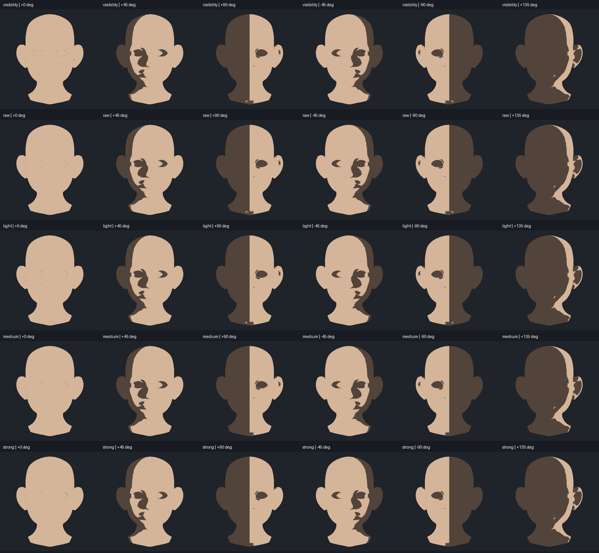
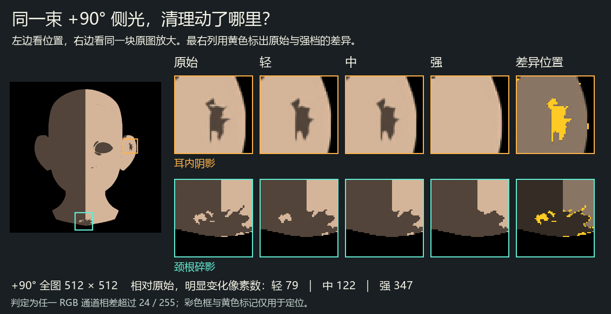
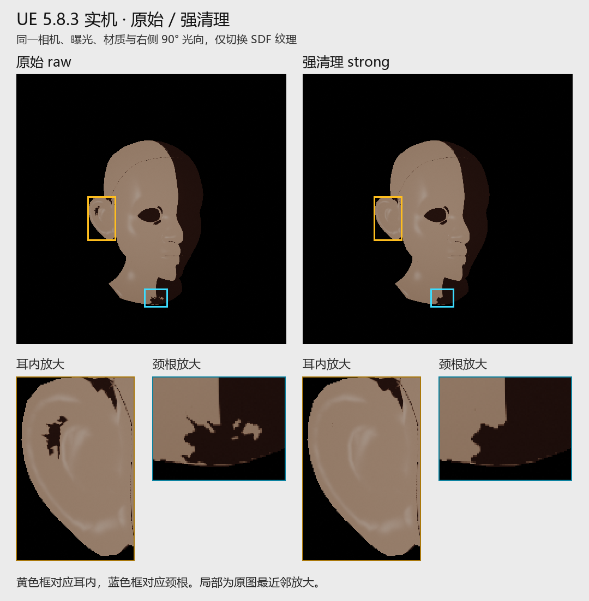
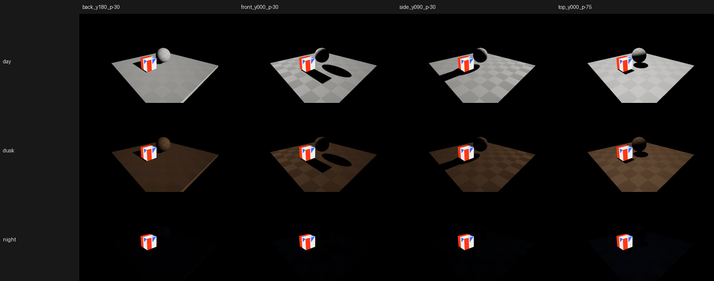
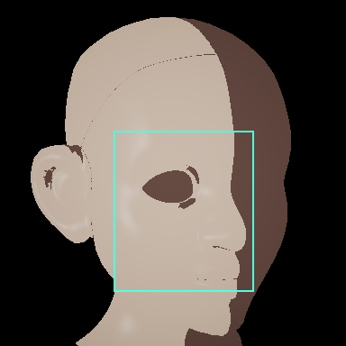
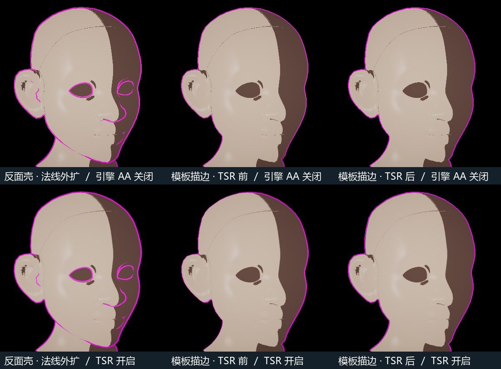

CASE · 个人渲染项目
个人面部 SDF
个人面部 SDF
光照
用一张可追溯的面部 SDF 控制明暗交界。先烘焙公开头模的可见性，再做局部清理，最后在 UE 里对光向和像素逐项复验。
角色独立完成烘焙、材质接入与实测
引擎Unreal Engine 5.8.3 · DX12 / SM6
技术栈Blender Cycles · CC0 公开头模 GEO-head_stylized · UE 材质 / UMG
01 · 烘焙与局部清理
清理耳内和颈根，
清理耳内和颈根，
先保住鼻口。
- 01从真实可见性出发用 Blender Human Base Meshes 的 CC0 头模做 Cycles 多光向可见性烘焙，共 35 次。
- 02局部选择清理强度耳内保留原始，颈根用强清理。三档清理对鼻口保护区 97,116 个像素的改动均为 0。
- 03保留可核对的编码输出 RGBA16 project 格式。G 存 θ/180，R 是 G 的 U 向镜像。


02 · UE 光照与对照
换光向，
换光向，
也能逐项对照。
- 01六光向复验UE 5.8.3 DX12 / SM6 实拍六个光向。屏幕擦除在 20% / 50% / 80% 对照硬明暗与 SDF；UMG 擦除控件实机视口记录 20% / 80%。
- 02GPU 回读与源图一致8 个 GPU 样点相对源 PNG 的最大归一化 RGB 误差为 0.0000073911。
- 03主光选择 F-3双灯切换自动化 1/1。六光向与三档擦除共 9 组静态方向，选灯、方向与写入材质的回读逐组一致。



03 · 角色时域稳定
关闭 AA 有改善，
关闭 AA 有改善，
TSR 组合仍未达标。
- 01同轨看眼、鼻、嘴CC0 静态头模、移动相机，连续 32 帧对比 4 倍边长参考。3° 默认软边下，解析式步进宽度使眼鼻嘴区域误差闪烁在关闭引擎 AA 时下降 10.53%，TSR 下上升 5.64%。
- 02硬边夹具也测一遍关闭引擎 AA，误差从 0.019750 降到 0.006695（−66.10%）。
- 03三条描边路径实拍反面壳、TSR 前模板、TSR 后模板各采 32 帧真实视口。动态参数切换的整帧 GPU 差异未越过 2% 判定线。

